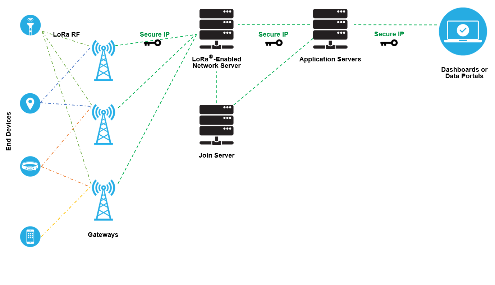

Title
Diego Sandoval
2021
## CV * [2002 - 2008] Electrial Engineering @ Unal * [2006] LABE ⚽ * [2007 - 2010] CIF * [2010 - 2015] ETH * [2011 - 2019] Sustainable buildings * [2017 - 2019] **LoRa/LoRaWAN** as a hobby * [2019 - ] <span class="fragment highlight-red">**LoRa®/LoRaWAN®**</span> as a job
## Disclaimer \# 1 * This is a personal project
<br></br> <br></br> <br></br> <br></br> [https://cloudiaworld.github.io/](https://cloudiaworld.github.io/)
## Outline * A crash-course on LoRa®/LoRaWAN® ~ 5' * A cow-tracker application 🐮🐮🐮 ~ 20' * Intermezzo ~ 5' * Getting started with LoRaWAN® ~ 10' * Q&A
## Recap * [Gonzalos's presentation]() * [What are LoRa® and LoRaWAN®?](https://lora-developers.semtech.com/library/tech-papers-and-guides/lora-and-lorawan/) * [What is LoRaWan](https://reference.digilentinc.com/reference/programmable-logic/pynq-z1/reference-manual)
<img data-src="images/osi.png"> [Source: Semtech](https://lora-developers.semtech.com/library/tech-papers-and-guides/lora-and-lorawan/)
## Wireless technologies <img data-src="images/wireless.png" height="300"> * $\uparrow R$: long range * $\uparrow B$: high bandwidth * $\downarrow C$: low power consumption (cost)
 [Source: Semtech](https://lora-developers.semtech.com/library/tech-papers-and-guides/lora-and-lorawan/)
<br></br> <br></br> [Source: TTN](www.thethingsnetwork.org)
## Network ownership * Both private and public networks are supported * Infrastructure as a service * Private network * Open-source * A hybrid model
*